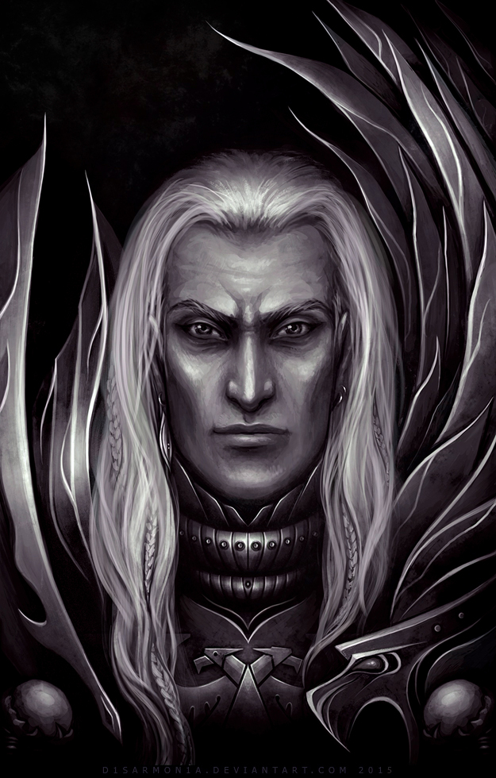

rsschool-2019Q1-cv
First/Second name:
Fulgrim, The Phoenician
Contact's:
info host
Summary:
Space Marine Primarch of the Emperor's Children | Daemon Prince of Slaanesh
Skills:
Stats, Tier: 4-B | At least 4-B, possibly higher | At least 2-C
Code:
no code for the Code God
Experience:
The Horus Heresy ,
The rebellion against Imperial Compliance on the world of Istvaan III.Education:
The fortress-factory of Callax ,
Learning of the gradual deterioration of both Callax and all the other settlements of Chemos.Level of English:
fluent